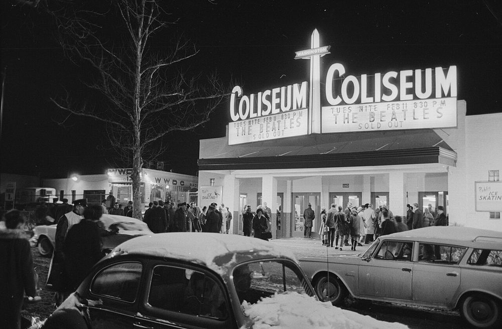

1964 music belonged to the Beatles.
They held all five top spots on the Billboard Hot 100 on April 4.
Six Beatles singles reached number one that year, 18 weeks in all.
Five of the year's top 25 songs were theirs, led by I Want to Hold Your Hand.
Listen to 1964 Music
25 of 1964's biggest hits are playable below, from Billboard's year-end top 100 for 1964.
Press play on any row, or use Play All to run the whole list.
| # | Title | Artist | Chart Peak | Genre |
|---|---|---|---|---|
| I Want to Hold Your Hand | The Beatles | No. 1, 7 wks | British Invasion | |
| She Loves You | The Beatles | No. 1, 2 wks | British Invasion | |
| Hello, Dolly! | Louis Armstrong | No. 1, 1 wk | Jazz & Easy Listening | |
| Oh, Pretty Woman | Roy Orbison | No. 1, 3 wks | Pop & Brill Building | |
| I Get Around | The Beach Boys | No. 1, 2 wks | Garage & Surf Rock | |
| Everybody Loves Somebody | Dean Martin | No. 1, 1 wk | Jazz & Easy Listening | |
| My Guy | Mary Wells | No. 1, 2 wks | Motown, Soul & R&B | |
| We'll Sing in the Sunshine | Gale Garnett | No. 4 | Folk | |
| Last Kiss | J. Frank Wilson and the Cavaliers | No. 2 | Pop & Brill Building | |
| Where Did Our Love Go | The Supremes | No. 1, 2 wks | Motown, Soul & R&B | |
| People | Barbra Streisand | No. 5 | Jazz & Easy Listening | |
| Java | Al Hirt | No. 4 | Jazz & Easy Listening | |
| A Hard Day's Night | The Beatles | No. 1, 2 wks | British Invasion | |
| Love Me Do | The Beatles | No. 1, 1 wk | British Invasion | |
| Do Wah Diddy Diddy | Manfred Mann | No. 1, 2 wks | British Invasion | |
| Please Please Me | The Beatles | No. 3 | British Invasion | |
| Dancing in the Street | Martha and the Vandellas | No. 2 | Motown, Soul & R&B | |
| Little Children | Billy J. Kramer and the Dakotas | No. 7 | British Invasion | |
| Love Me with All Your Heart | The Ray Charles Singers | No. 3 | Jazz & Easy Listening | |
| Under the Boardwalk | The Drifters | No. 4 | Motown, Soul & R&B | |
| Chapel of Love | The Dixie Cups | No. 1, 3 wks | Pop & Brill Building | |
| Suspicion | Terry Stafford | No. 3 | Pop & Brill Building | |
| Glad All Over | The Dave Clark Five | No. 6 | British Invasion | |
| Rag Doll | The Four Seasons | No. 1, 2 wks | Pop & Brill Building | |
| Dawn (Go Away) | The Four Seasons | No. 3 | Pop & Brill Building |

Table of Contents
- Listen to 1964 Music
- 1964 Music's Billboard Hot 100 Number Ones
- Key Albums Released in 1964
- Notable Events in 1964
- Genre Shifts in 1964 Music
- Play 1964 on the Radio Dial
- FAQ
1964 Music's Billboard Hot 100 Number Ones
Twenty-three different singles reached the top of the Billboard Hot 100 in 1964.
The Beatles accounted for six of them and 18 weeks at number one, more than twice the total of any other act.
The Supremes put three in that list, the first of five straight for the group.
| Title | Artist | Chart | Peak Date | Weeks at #1 |
|---|---|---|---|---|
| There! I've Said It Again | Bobby Vinton | Billboard Hot 100 | Jan 4, 1964 | 4 |
| I Want to Hold Your Hand | The Beatles | Billboard Hot 100 | Feb 1, 1964 | 7 |
| She Loves You | The Beatles | Billboard Hot 100 | Mar 21, 1964 | 2 |
| Can't Buy Me Love | The Beatles | Billboard Hot 100 | Apr 4, 1964 | 5 |
| Hello, Dolly! | Louis Armstrong | Billboard Hot 100 | May 9, 1964 | 1 |
| My Guy | Mary Wells | Billboard Hot 100 | May 16, 1964 | 2 |
| Love Me Do | The Beatles | Billboard Hot 100 | May 30, 1964 | 1 |
| Chapel of Love | The Dixie Cups | Billboard Hot 100 | Jun 6, 1964 | 3 |
| A World Without Love | Peter and Gordon | Billboard Hot 100 | Jun 27, 1964 | 1 |
| I Get Around | The Beach Boys | Billboard Hot 100 | Jul 4, 1964 | 2 |
| Rag Doll | The Four Seasons | Billboard Hot 100 | Jul 18, 1964 | 2 |
| A Hard Day's Night | The Beatles | Billboard Hot 100 | Aug 1, 1964 | 2 |
| Everybody Loves Somebody | Dean Martin | Billboard Hot 100 | Aug 15, 1964 | 1 |
| Where Did Our Love Go | The Supremes | Billboard Hot 100 | Aug 22, 1964 | 2 |
| The House of the Rising Sun | The Animals | Billboard Hot 100 | Sep 5, 1964 | 3 |
| Oh, Pretty Woman | Roy Orbison | Billboard Hot 100 | Sep 26, 1964 | 3 |
| Do Wah Diddy Diddy | Manfred Mann | Billboard Hot 100 | Oct 17, 1964 | 2 |
| Baby Love | The Supremes | Billboard Hot 100 | Oct 31, 1964 | 4 |
| Leader of the Pack | The Shangri-Las | Billboard Hot 100 | Nov 28, 1964 | 1 |
| Ringo | Lorne Greene | Billboard Hot 100 | Dec 5, 1964 | 1 |
| Mr. Lonely | Bobby Vinton | Billboard Hot 100 | Dec 12, 1964 | 1 |
| Come See About Me | The Supremes | Billboard Hot 100 | Dec 19, 1964 | 1 |
| I Feel Fine | The Beatles | Billboard Hot 100 | Dec 26, 1964 | 1 (continued into 1965) |
The Beatles Replace Themselves at the Top
I Want to Hold Your Hand reached number one on February 1 and stayed there seven weeks.
She Loves You took over on March 21, and Can't Buy Me Love followed on April 4.
That chain kept the Beatles on top for 14 straight weeks.
Louis Armstrong's Hello, Dolly! finally broke it on May 9, his first Hot 100 number one.
Key Albums Released in 1964
The albums of 1964 carried the same split as the singles.
A British band conquered America while an American songwriter turned folk into something sharper.
- Meet the Beatles!, The Beatles, Capitol Records (released January 20, 1964, US): the band's American debut album.
- The Times They Are a-Changin', Bob Dylan, Columbia Records (released January 13, 1964): his third album, built around the title protest song.
- A Hard Day's Night, The Beatles, Parlophone Records (released July 10, 1964, UK): the soundtrack album to their first film.
Beatlemania Arrives in America
The Beatles landed at New York's Kennedy Airport on February 7, greeted by thousands of screaming fans.
Two days later they made the first of three Ed Sullivan Show appearances in as many Sundays.
By April 11 the group held 14 positions on the Hot 100 at once.
Notable Events in 1964
The charts and the calendar tell the same story.
- The Beatles occupied all five top positions on the Billboard Hot 100 on April 4, 1964.
- The Supremes reached number one on August 22 with Where Did Our Love Go, the first of five consecutive chart-toppers.
- The Animals' The House of the Rising Sun reached number one on the Hot 100 on September 5, 1964. Read more on September 5
- Roy Orbison's Oh, Pretty Woman hit number one on September 26, 1964. Read more on September 26
- The Beach Boys made their Ed Sullivan Show debut on September 27, 1964. Read more on September 27
- Sam Cooke died in Los Angeles on December 11, 1964.
Genre Shifts in 1964 Music
1964 music was the year the British Invasion took over American radio.
Eight of the year-end top 25 came from British acts.
The Beatles supplied five, joined by Manfred Mann, the Dave Clark Five and the Dakotas.
Peter and Gordon and the Animals also reached number one.
American sounds held their ground.
Mary Wells, the Supremes and Martha and the Vandellas put three songs from Motown, soul and R&B into the top 25.
The Beach Boys' I Get Around carried surf rock to number one.
The Dixie Cups' Chapel of Love and the Shangri-Las' Leader of the Pack kept Brill Building pop and girl groups on top.
Hello, Dolly!, People and Java gave jazz and easy listening five spots in all.
Dylan Raises the Bar for Songwriters
Bob Dylan's The Times They Are a-Changin' arrived in January.
Its protest songs set the standard that folk rock built on for the rest of the decade.
Play 1964 on the Radio Dial
Hear 1964 music the way listeners did, back to back and unscripted.
The site's own Play 1964 on the Radio Dial tunes every station to songs from this year alone.
FAQ
What was the number one song of 1964?
The Beatles' I Want to Hold Your Hand was the biggest song of 1964 on Billboard's year-end Hot 100.
It also held the longest run at number one that year, seven weeks starting February 1.
When did the Beatles hold the top five spots on the Hot 100?
The Beatles held all five top positions on the Billboard Hot 100 on April 4, 1964.
The five songs were Can't Buy Me Love, Twist and Shout, She Loves You, I Want to Hold Your Hand and Please Please Me.
How many number ones did the Beatles have in 1964?
The Beatles had six Billboard Hot 100 number ones in 1964, for 18 weeks at the top.
They were I Want to Hold Your Hand, She Loves You, Can't Buy Me Love, Love Me Do, A Hard Day's Night and I Feel Fine.
No other act came close to that total.
Which other British acts topped the US charts in 1964?
Three other British acts reached number one on the Billboard Hot 100 in 1964.
They were Peter and Gordon with A World Without Love, the Animals with The House of the Rising Sun, and Manfred Mann with Do Wah Diddy Diddy.
What kind of music was popular in 1964?
1964 was the year of the British Invasion, with Beatles records dominating the singles chart.
Motown hits from Mary Wells and the Supremes, Beach Boys surf pop and Brill Building girl groups all sold strongly.
Easy listening standards and Bob Dylan's folk songwriting rounded out the year.
1964 turned into the year the Beatles took over America.
They filled the top of the charts while Motown, surf pop and girl groups held their own underneath.
Compare it with the chart quirks of 1963 music.
Or explore the full British Invasion story.
Explore the rest of the decade on the 1960smusic.net homepage.